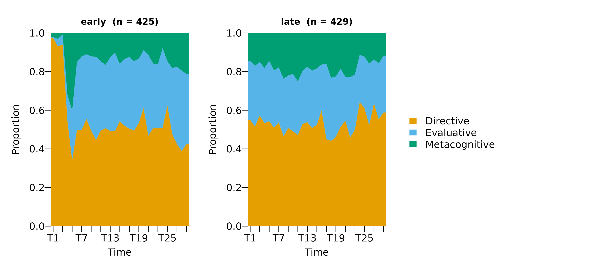
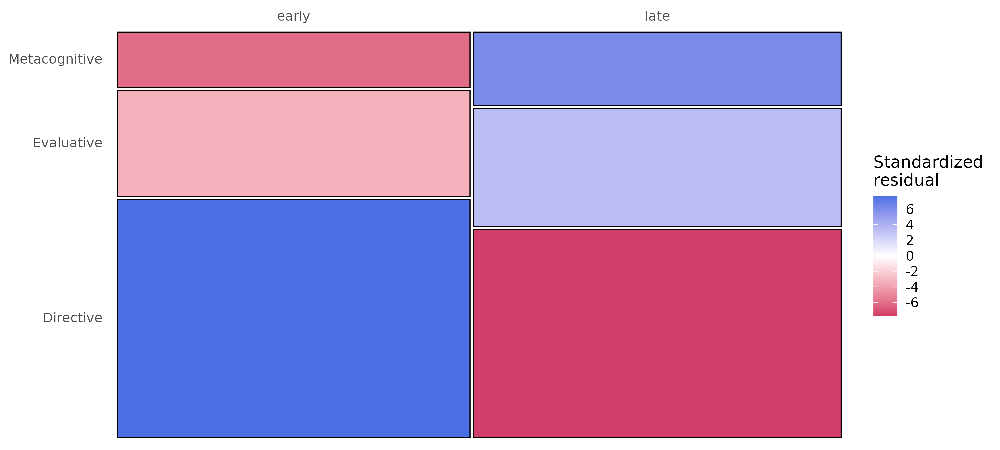
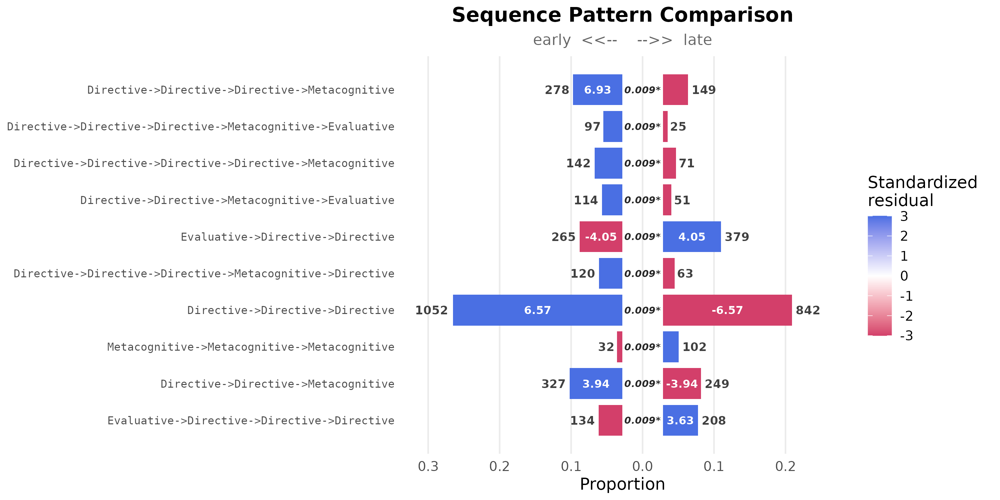
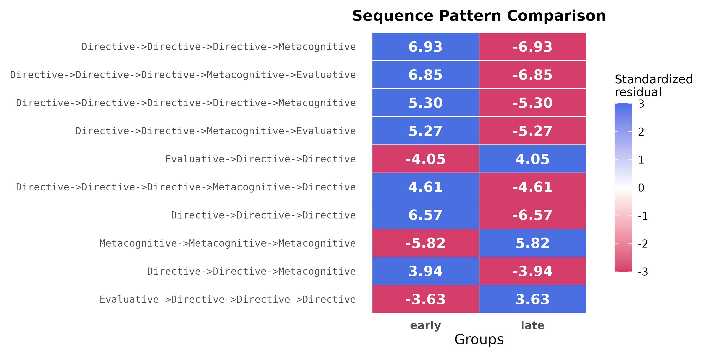
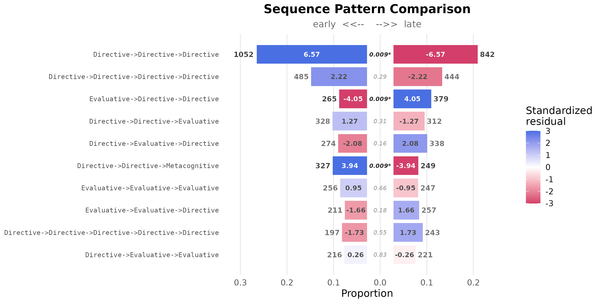
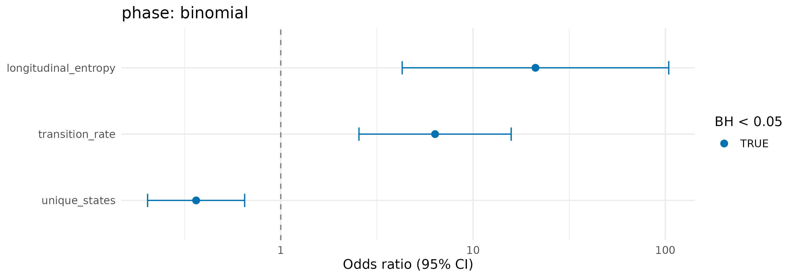

Comparing Sequences Between Groups: Early vs Late Human-AI Interactions
Mohammed Saqr
University of Eastern FinlandSonsoles López-Pernas
University of Eastern FinlandKamila Misiejuk
FernUniversität in Hagen, GermanySource:
vignettes/sequence-comparison.Rmd
sequence-comparison.RmdTwo groups of sequences can differ at several levels: in how often each state occurs, in which state follows which, in summary indices of each sequence, and in the patterns of states they contain. Nestimate (Saqr, López-Pernas & Misiejuk 2026) compares sequences at each of these levels. This vignette applies them to one question: whether people direct an AI coding assistant differently in the first and the second half of a session. Temporal patterns within a learning episode have been used to study how students’ interactions and self-regulation develop over time (Saqr, Nouri & Fors 2019).
| Question | Function |
|---|---|
| States: are they used in different proportions? | mosaic_test() |
| Transitions: do their probabilities differ? | permutation() |
| Sequences: do their summary indices differ? | sequence_metrics(group = ) |
| Patterns: does a pattern occur more often? | sequence_compare() |
| Patterns: does a pattern occur in more sequences? | sequence_patterns() |
| Jointly: which patterns or indices distinguish the groups? |
pattern_outcome(), outcome_model()
|
Data
human_long holds the coded human turns of 429 human-AI
pair-programming (“vibe coding”) sessions across 34 projects, one row
per coded action (Saqr, Misiejuk & López-Pernas 2026; Misiejuk et
al. 2026). The nine action codes are grouped into three clusters,
Directive, Evaluative and
Metacognitive, in the column cluster, which is
the state used here. order_in_session gives the position of
each action within its session.
mark_phases() orders the actions of each session by
order_in_session and divides them into consecutive phases
of nearly equal length. With n = 2, the first half of each
session is labelled early and the second half
late; with an odd number of actions, the middle one belongs
to the second half.
library(Nestimate)
halves <- mark_phases(human_long, actor = "session_id",
time = "order_in_session", n = 2,
labels = c("early", "late"))build_network() with group = "phase"
estimates one transition network per half and keeps the half-session
sequences, which every function below reads.
net <- build_network(halves, actor = "session_id", action = "cluster",
group = "phase", method = "relative")
net
#> Group Networks (2 groups, group_col: phase)
#>
#> Group Nodes Edges Weights
#> early 3 9 [0.105, 0.637]
#> late 3 9 [0.131, 0.575]There are 425 early and 429 late half-sessions; the four sessions with a single action have no early half.
Nested data
Every session contributes one early and one late half, and the
actions of a session come from the same person, project and AI
assistant. The observations are therefore nested in sessions, and a test
that treats the actions or the half-sessions as independent overstates
the evidence when sessions differ from each other. Each function below
has an argument for the nesting: actor for the tests based
on counts and permutations, which then correct for the clustering or
shuffle the labels only within a session (Anderson & ter Braak 2003;
Good 2005), and group for the regression models, which then
include a random intercept for each session (Bates et al. 2015).
States
The first comparison concerns the share of each state, ignoring
order. sequence_plot() with
type = "distribution" shows the share of each state at each
position of the half-sessions. With na = FALSE the shares
are taken among the observed actions, and trim = 0.9 keeps
the positions that hold 90% of the actions, since few half-sessions are
longer.
sequence_plot(net, type = "distribution", na = FALSE, trim = 0.9)
Early halves start almost entirely with directives; late halves start with all three states, and metacognitive actions take a larger share of the late halves.
mosaic_test() cross-tabulates the half against the state
and tests the association with every method for clustered counts. With
actor = "session_id", the sessions are the clusters.
mosaic_test(net, actor = "session_id")
#> method test statistic df df2 p_value
#> 1 chisq Pearson 69.78883 2.000000 NA 7.007264e-16
#> 2 rao_scott Rao-Scott 28.72328 1.973638 844.7172 1.156606e-12
#> 3 donner_klar Donner-Klar NA NA NA NA
#> 4 cmh Cochran-Mantel-Haenszel 74.24399 2.000000 NA 7.553064e-17
#> 5 gee GEE Wald 58.16751 2.000000 NA 2.339297e-13
#> 6 glmm GLMM Wald 69.33653 2.000000 NA 8.785453e-16
#> n clusters design_effect icc
#> 1 10796 NA NA NA
#> 2 10796 429 1.214848 NA
#> 3 10796 NA NA NA
#> 4 10796 421 NA NA
#> 5 10796 429 NA NA
#> 6 10796 429 NA NA
#> note
#> 1 <NA>
#> 2 <NA>
#> 3 Donner-Klar needs one variable that is constant within every cluster
#> 4 <NA>
#> 5 Wald test with a cluster-robust covariance; liberal unless the actors are many relative to the degrees of freedom (see ?mosaic_analysis)
#> 6 <NA>The Pearson chi-square test treats the 10,796 actions as independent. The Rao-Scott test corrects it for the clustering with a second-order adjustment (Rao & Scott 1984); the design effect, 1.21, is the factor by which the clustering inflates the variance. The Cochran-Mantel-Haenszel test stratifies by session and compares the halves within each of the 421 sessions that have both (Landis, Heyman & Koch 1978). The GEE test uses a cluster-robust covariance (Liang & Zeger 1986), and the GLMM test a mixed model with a random intercept per session. The Donner-Klar test needs one variable that is constant within each cluster (Donner & Klar 1994), and the half varies within every session, so it is not computed. The four tests that apply all reject independence (Rao-Scott F(1.97, 844.7) = 28.72, CMH = 74.24, GEE = 58.17, GLMM = 69.34; every p < 0.001).
mosaic_plot(net)
In the mosaic plot, the width of a column is the share of actions in each half and the height of a tile the share of each state within the half. The fill is the standardised residual: blue tiles hold more actions than independence predicts and red tiles fewer. Directives are over-represented early; evaluations and metacognitive actions late.
Transitions
The second comparison concerns the transition probabilities, the
probability of each state following each state.
permutation() compares the two networks edge by edge and as
a whole by shuffling the early and late labels
and recomputing the differences, which is the comparison used in
transition network analysis (Saqr et al. 2025). With
actor = "session_id", the labels are shuffled only within
each session.
set.seed(2026)
transitions <- permutation(net, iter = 1000, actor = "session_id")
summary(transitions)
#> group from to weight_x weight_y diff
#> 1 early vs late Directive Directive 0.6368638 0.5752445 0.06161928
#> 2 early vs late Directive Evaluative 0.2032325 0.2449210 -0.04168853
#> 3 early vs late Directive Metacognitive 0.1599037 0.1798345 -0.01993075
#> 4 early vs late Evaluative Directive 0.4547582 0.4901712 -0.03541302
#> 5 early vs late Evaluative Evaluative 0.4407176 0.3792010 0.06151661
#> 6 early vs late Evaluative Metacognitive 0.1045242 0.1306278 -0.02610359
#> 7 early vs late Metacognitive Directive 0.4494048 0.3964497 0.05295506
#> 8 early vs late Metacognitive Evaluative 0.3690476 0.2875740 0.08147365
#> 9 early vs late Metacognitive Metacognitive 0.1815476 0.3159763 -0.13442871
#> effect_size p_value sig
#> 1 4.767254 0.000999001 TRUE
#> 2 -3.424018 0.000999001 TRUE
#> 3 -2.005723 0.046953047 TRUE
#> 4 -1.813544 0.062937063 FALSE
#> 5 3.231657 0.002997003 TRUE
#> 6 -2.159258 0.027972028 TRUE
#> 7 2.060593 0.033966034 TRUE
#> 8 3.324027 0.002997003 TRUE
#> 9 -4.926942 0.000999001 TRUEweight_x and weight_y are the transition
probabilities of the early and the late half, diff their
difference, and effect_size the difference divided by the
standard deviation of the permuted differences. Eight of the nine
transitions differ. The global statistic M, the sum of the absolute edge
differences, is 0.515, and no permutation reached it (p = 0.001, the
smallest value 1,000 permutations can give). The largest difference
concerns a metacognitive action followed by another: its probability is
0.18 in the first half and 0.32 in the second.
Sequence indices
The third comparison summarises each half-session with indices of its
composition and dynamics, such as the number of distinct states, the
evenness of the states (longitudinal entropy), the share of consecutive
actions that change state (transition rate) and the mean length of a
spell in one state (Gabadinho et al. 2011).
sequence_metrics() computes them for every sequence; for a
grouped network it compares each index between the groups. For each
index it reports the number of half-sessions, the mean and the standard
deviation of each half; the difference between the means (late minus
early); Hedges’ g, the standardised difference corrected for small
samples, with its 95% interval (Hedges 1981); eta squared, the share of
the index’s variance between the halves; and a permutation p-value of
the one-way F statistic, adjusted with the Benjamini-Hochberg method.
The network was built with actor = "session_id", so the
labels are shuffled within each session.
set.seed(2026)
sequence_metrics(net)
#> Sequence metrics by phase [19 indices | 2 groups: early, late]
#> permutation of the one-way F: 1000 iter (BH), within session
#>
#> index group n mean sd diff g g_lo g_hi eta_sq
#> valid_n early 425 12.44 12.00 0.40 0.03 -0.10 0.17 0.00
#> valid_n late 429 12.84 11.98 0.40 0.03 -0.10 0.17 0.00
#> valid_proportion early 425 1.00 0.00 0.00 NA NA NA NA
#> valid_proportion late 429 1.00 0.00 0.00 NA NA NA NA
#> unique_states early 425 2.42 0.74 0.20 0.31 0.17 0.44 0.02
#> unique_states late 429 2.62 0.58 0.20 0.31 0.17 0.44 0.02
#> mean_spell_duration early 425 2.21 0.93 -0.36 -0.41 -0.54 -0.27 0.04
#> mean_spell_duration late 429 1.85 0.84 -0.36 -0.41 -0.54 -0.27 0.04
#> max_spell_duration early 425 3.97 1.75 -0.28 -0.14 -0.28 -0.01 0.01
#> max_spell_duration late 429 3.69 2.16 -0.28 -0.14 -0.28 -0.01 0.01
#> longitudinal_entropy early 425 0.61 0.30 0.13 0.47 0.33 0.60 0.05
#> longitudinal_entropy late 429 0.73 0.24 0.13 0.47 0.33 0.60 0.05
#> simpson_diversity early 425 0.41 0.20 0.09 0.50 0.36 0.63 0.06
#> simpson_diversity late 429 0.50 0.16 0.09 0.50 0.36 0.63 0.06
#> self_loop_tendency early 418 0.59 0.23 -0.14 -0.60 -0.74 -0.46 0.08
#> self_loop_tendency late 423 0.45 0.22 -0.14 -0.60 -0.74 -0.46 0.08
#> transition_rate early 418 0.41 0.23 0.14 0.60 0.46 0.74 0.08
#> transition_rate late 423 0.55 0.22 0.14 0.60 0.46 0.74 0.08
#> transition_complexity early 425 0.47 0.31 0.06 0.20 0.07 0.34 0.01
#> transition_complexity late 429 0.53 0.27 0.06 0.20 0.07 0.34 0.01
#> F p p_adj
#> 0.24 0.000999 0.0015
#> 0.24 0.000999 0.0015
#> NA NA NA
#> NA NA NA
#> 20.03 0.000999 0.0015
#> 20.03 0.000999 0.0015
#> 35.24 0.000999 0.0015
#> 35.24 0.000999 0.0015
#> 4.38 0.00999 0.012
#> 4.38 0.00999 0.012
#> 46.76 0.000999 0.0015
#> 46.76 0.000999 0.0015
#> 52.75 0.000999 0.0015
#> 52.75 0.000999 0.0015
#> 75.70 0.000999 0.0015
#> 75.70 0.000999 0.0015
#> 75.70 0.000999 0.0015
#> 75.70 0.000999 0.0015
#> 8.65 0.000999 0.0015
#> 8.65 0.000999 0.0015
#> ... and 9 more indices (18 rows); summary() returns them allMost indices differ between the halves. The largest differences
concern the opening state: in the late halves it holds a smaller share
of the half-session (initial_state_proportion, 0.67 against
0.51, g = -0.78 [-0.92, -0.64]) and is left sooner
(initial_state_persistence, g = -0.70). Late halves change
state more often (transition_rate, 0.41 against 0.55, g =
0.60 [0.46, 0.74]), spend less time in their dominant state
(dominant_proportion, g = -0.53) and in each spell
(mean_spell_duration, 2.22 against 1.86 actions, g =
-0.41), and spread their actions more evenly
(longitudinal_entropy, 0.61 against 0.74, g = 0.47;
simpson_diversity, g = 0.50).
self_loop_tendency is one minus the transition rate, so its
test is the same. Three rows need no interpretation. The late half is
never shorter than the early half, because mark_phases()
puts the middle action of an odd-length session in the second half, so
valid_n differs although the means are almost equal (12.4
against 12.8, g = 0.03). valid_proportion is 1 for every
half-session and cannot be compared. The two indices of the emergent
state are defined only for the half-sessions that have one (161 early,
240 late) and do not differ.
Patterns
A pattern is a sequence of consecutive states, such as
Directive->Directive->Evaluative, a k-gram of length
3. The halves can differ in how often a pattern occurs, which weighs
each half-session by how often it repeats the pattern, and in how many
half-sessions contain it, which counts each half-session once.
How often a pattern occurs
For each pattern length in sub (3 to 5 by default),
sequence_compare() counts every pattern in each half and
keeps the patterns that occur at least min_freq times in
both. The standardised residual compares a half’s count with the count
expected if pattern and half were independent, in approximately
standard-normal units (Haberman 1973). The permutation test shuffles the
labels within sessions (actor), and the p-values are
adjusted with the false discovery rate (Benjamini & Hochberg
1995).
set.seed(20260413)
counts <- sequence_compare(net, min_freq = 25L, test = "permutation",
iter = 1000L, actor = "session_id")
counts
#> Sequence Comparison [100 patterns | 2 groups: early, late]
#> Lengths: 3, 4, 5 | min_freq: 25 | permutation: 1000 iter (fdr), actor: session_id (429 actors, mixed)
#>
#> pattern group count prop
#> Directive->Directive->Directive->Metacognitive early 278 0.07
#> Directive->Directive->Directive->Metacognitive late 149 0.04
#> Directive->Directive->Directive->Metacognitive->Evaluative early 97 0.03
#> Directive->Directive->Directive->Metacognitive->Evaluative late 25 0.01
#> Directive->Directive->Directive->Directive->Metacognitive early 142 0.04
#> Directive->Directive->Directive->Directive->Metacognitive late 71 0.02
#> Directive->Directive->Metacognitive->Evaluative early 114 0.03
#> Directive->Directive->Metacognitive->Evaluative late 51 0.01
#> Evaluative->Directive->Directive early 265 0.06
#> Evaluative->Directive->Directive late 379 0.08
#> Directive->Directive->Directive->Metacognitive->Directive early 120 0.03
#> Directive->Directive->Directive->Metacognitive->Directive late 63 0.02
#> Directive->Directive->Directive early 1052 0.24
#> Directive->Directive->Directive late 842 0.18
#> Metacognitive->Metacognitive->Metacognitive early 32 0.01
#> Metacognitive->Metacognitive->Metacognitive late 102 0.02
#> Directive->Directive->Metacognitive early 327 0.07
#> Directive->Directive->Metacognitive late 249 0.05
#> Evaluative->Directive->Directive->Directive early 134 0.03
#> Evaluative->Directive->Directive->Directive late 208 0.05
#> resid effect p
#> 6.93 11.31 0.00908
#> -6.93 11.31 0.00908
#> 6.85 10.81 0.00908
#> -6.85 10.81 0.00908
#> 5.30 8.39 0.00908
#> -5.30 8.39 0.00908
#> 5.27 7.23 0.00908
#> -5.27 7.23 0.00908
#> -4.05 7.12 0.00908
#> 4.05 7.12 0.00908
#> 4.61 6.46 0.00908
#> -4.61 6.46 0.00908
#> 6.57 6.25 0.00908
#> -6.57 6.25 0.00908
#> -5.82 5.73 0.00908
#> 5.82 5.73 0.00908
#> 3.94 5.66 0.00908
#> -3.94 5.66 0.00908
#> -3.63 5.24 0.00908
#> 3.63 5.24 0.00908
#> ... and 90 more patterns (180 rows); summary() returns them allThe printout shows one row per pattern and half: count
is how often the pattern occurs in the half, prop its share
of the half’s patterns of that length, resid the
standardised residual, and effect the number of standard
deviations by which the observed statistic exceeds the mean of the
permuted ones; effect and p belong to the
pattern and repeat on its two rows.
summary(counts, format = "long") returns that table for
every pattern, and summary(counts) one row per pattern. Of
the 100 patterns tested, 18 differ at a false discovery rate of 0.05: 11
are more frequent early and 7 late. Directives followed by a
metacognitive action are more frequent early
(Directive->Directive->Directive->Metacognitive,
278 against 149), and patterns that start with an evaluation and
continue with directives are more frequent late
(Evaluative->Directive->Directive, 265 against
379).
plot(counts, style = "pyramid", show_residuals = TRUE)
The pyramid shows the patterns with the largest differences, the first half on the left and the second on the right, each pattern’s count beside its bar, its residual inside the bar when the bar is wide enough, and its p-value in the middle. The heatmap shows the same residuals as a grid of patterns by halves, the layout used for more than two groups.
plot(counts, style = "heatmap")
By default the patterns are ranked by the test statistic;
sort = "frequency" ranks them by their total count instead,
which shows the most common patterns whatever their difference.
plot(counts, style = "pyramid", sort = "frequency", show_residuals = TRUE)
How many sequences contain a pattern
Support is the share of sequences that contain a pattern at least
once (Agrawal & Srikant 1995). sequence_patterns()
reports the support of each pattern and, for a group of networks,
compares it between the groups with Fisher’s exact test and an odds
ratio with its 95% interval; the odds ratios are those of the late half,
and p_adj is adjusted with the Benjamini-Hochberg method.
Fisher’s test treats the half-sessions as independent samples, so these
p-values do not take the sessions into account. Four kinds of pattern
are compared.
Contiguous patterns
ngrams <- sequence_patterns(net, type = "ngram", len = 3:4, min_freq = 25)
ngrams
#> Sequence patterns by phase [95 patterns | 2 groups: early, late]
#> presence test: Fisher's exact, odds ratio against early (BH)
#>
#> pattern n_sequences support group
#> Directive->Directive->Directive 630 0.74 early
#> Directive->Directive->Directive 630 0.74 late
#> Directive->Directive->Directive->Metacognitive 362 0.42 early
#> Directive->Directive->Directive->Metacognitive 362 0.42 late
#> Directive->Directive->Directive->Directive 385 0.45 early
#> Directive->Directive->Directive->Directive 385 0.45 late
#> Directive->Directive->Metacognitive 435 0.51 early
#> Directive->Directive->Metacognitive 435 0.51 late
#> Directive->Directive->Metacognitive->Evaluative 150 0.18 early
#> Directive->Directive->Metacognitive->Evaluative 150 0.18 late
#> Evaluative->Directive->Directive 389 0.46 early
#> Evaluative->Directive->Directive 389 0.46 late
#> Evaluative->Directive->Directive->Directive 250 0.29 early
#> Evaluative->Directive->Directive->Directive 250 0.29 late
#> Metacognitive->Metacognitive->Metacognitive 65 0.08 early
#> Metacognitive->Metacognitive->Metacognitive 65 0.08 late
#> Directive->Directive->Metacognitive->Directive 197 0.23 early
#> Directive->Directive->Metacognitive->Directive 197 0.23 late
#> Directive->Metacognitive->Directive->Evaluative 70 0.08 early
#> Directive->Metacognitive->Directive->Evaluative 70 0.08 late
#> group_support odds_ratio or_lower or_upper p_value p_adj
#> 0.88 0.20 0.13 0.28 1.92e-22 1.82e-20
#> 0.59 0.20 0.13 0.28 1.92e-22 1.82e-20
#> 0.57 0.29 0.21 0.39 2.67e-18 1.27e-16
#> 0.28 0.29 0.21 0.39 2.67e-18 1.27e-16
#> 0.55 0.46 0.35 0.61 3.43e-08 1.09e-06
#> 0.36 0.46 0.35 0.61 3.43e-08 1.09e-06
#> 0.60 0.48 0.36 0.64 1.34e-07 3.18e-06
#> 0.42 0.48 0.36 0.64 1.34e-07 3.18e-06
#> 0.24 0.39 0.26 0.57 3.71e-07 7.05e-06
#> 0.11 0.39 0.26 0.57 3.71e-07 7.05e-06
#> 0.37 2.01 1.51 2.67 5.16e-07 8.17e-06
#> 0.54 2.01 1.51 2.67 5.16e-07 8.17e-06
#> 0.22 2.11 1.54 2.89 1.35e-06 1.83e-05
#> 0.37 2.11 1.54 2.89 1.35e-06 1.83e-05
#> 0.04 2.56 1.44 4.72 0.000692 0.00822
#> 0.11 2.56 1.44 4.72 0.000692 0.00822
#> 0.28 0.57 0.41 0.80 0.00084 0.00887
#> 0.18 0.57 0.41 0.80 0.00084 0.00887
#> 0.11 0.42 0.24 0.73 0.0011 0.0104
#> 0.05 0.42 0.24 0.73 0.0011 0.0104
#> ... and 85 more patterns (170 rows); summary() returns them allOf the 95 patterns, 20 differ in support at an adjusted level of
0.05: 8 occur in a larger share of early halves and 12 in a larger share
of late halves. Directive->Directive->Directive
occurs in 88% of the early halves and 59% of the late halves (odds ratio
0.20 [0.13, 0.28]), and
Evaluative->Directive->Directive in 37% and 54% (2.01
[1.51, 2.67]).
Two states with others between them
A gapped pattern fixes two states and allows any states between them:
Evaluative->*->Directive is an evaluation followed by
a directive two positions later,
Evaluative->**->Directive three positions later.
gaps <- sequence_patterns(net, type = "gapped", gap = 1:2, min_freq = 25)
gaps
#> Sequence patterns by phase [18 patterns | 2 groups: early, late]
#> presence test: Fisher's exact, odds ratio against early (BH)
#>
#> pattern n_sequences support group group_support
#> Directive->*->Directive 723 0.85 early 0.92
#> Directive->*->Directive 723 0.85 late 0.77
#> Evaluative->**->Directive 421 0.49 early 0.39
#> Evaluative->**->Directive 421 0.49 late 0.60
#> Evaluative->*->Directive 477 0.56 early 0.47
#> Evaluative->*->Directive 477 0.56 late 0.65
#> Directive->**->Metacognitive 507 0.59 early 0.67
#> Directive->**->Metacognitive 507 0.59 late 0.52
#> Evaluative->*->Metacognitive 251 0.29 early 0.22
#> Evaluative->*->Metacognitive 251 0.29 late 0.37
#> Evaluative->**->Metacognitive 212 0.25 early 0.19
#> Evaluative->**->Metacognitive 212 0.25 late 0.31
#> Metacognitive->**->Metacognitive 150 0.18 early 0.12
#> Metacognitive->**->Metacognitive 150 0.18 late 0.23
#> Directive->*->Metacognitive 501 0.59 early 0.64
#> Directive->*->Metacognitive 501 0.59 late 0.53
#> Metacognitive->*->Metacognitive 183 0.21 early 0.17
#> Metacognitive->*->Metacognitive 183 0.21 late 0.26
#> Directive->**->Directive 634 0.74 early 0.78
#> Directive->**->Directive 634 0.74 late 0.71
#> odds_ratio or_lower or_upper p_value p_adj
#> 0.27 0.17 0.42 1.79e-10 3.22e-09
#> 0.27 0.17 0.42 1.79e-10 3.22e-09
#> 2.33 1.76 3.10 1.06e-09 9.54e-09
#> 2.33 1.76 3.10 1.06e-09 9.54e-09
#> 2.05 1.54 2.72 3.18e-07 1.91e-06
#> 2.05 1.54 2.72 3.18e-07 1.91e-06
#> 0.52 0.39 0.69 2.94e-06 1.32e-05
#> 0.52 0.39 0.69 2.94e-06 1.32e-05
#> 2.03 1.49 2.78 4.26e-06 1.53e-05
#> 2.03 1.49 2.78 4.26e-06 1.53e-05
#> 1.97 1.41 2.75 2.65e-05 7.94e-05
#> 1.97 1.41 2.75 2.65e-05 7.94e-05
#> 2.05 1.40 3.02 0.000104 0.000268
#> 2.05 1.40 3.02 0.000104 0.000268
#> 0.64 0.48 0.86 0.00177 0.00397
#> 0.64 0.48 0.86 0.00177 0.00397
#> 1.66 1.18 2.35 0.00269 0.00537
#> 1.66 1.18 2.35 0.00269 0.00537
#> 0.68 0.49 0.94 0.0188 0.0338
#> 0.68 0.49 0.94 0.0188 0.0338
#> ... and 8 more patterns (16 rows); summary() returns them allOf the 18 gapped patterns, 10 differ. An evaluation is followed by a directive two or three positions later in more late halves (47% against 65%, odds ratio 2.05 [1.54, 2.72]; 39% against 60%, 2.33 [1.76, 3.10]), and a directive by a directive two positions later in more early halves (92% against 77%, 0.27 [0.17, 0.42]).
Repetitions of one state
A repeated pattern is a repetition of one state. Comparing repetitions of increasing length shows whether a group persists in a state for longer.
repeats <- sequence_patterns(net, type = "repeated", len = 2:5,
min_freq = 10)
repeats
#> Sequence patterns by phase [12 patterns | 2 groups: early, late]
#> presence test: Fisher's exact, odds ratio against early (BH)
#>
#> pattern
#> Directive->Directive->Directive
#> Directive->Directive->Directive
#> Directive->Directive
#> Directive->Directive
#> Directive->Directive->Directive->Directive
#> Directive->Directive->Directive->Directive
#> Metacognitive->Metacognitive
#> Metacognitive->Metacognitive
#> Metacognitive->Metacognitive->Metacognitive
#> Metacognitive->Metacognitive->Metacognitive
#> Metacognitive->Metacognitive->Metacognitive->Metacognitive
#> Metacognitive->Metacognitive->Metacognitive->Metacognitive
#> Metacognitive->Metacognitive->Metacognitive->Metacognitive->Metacognitive
#> Metacognitive->Metacognitive->Metacognitive->Metacognitive->Metacognitive
#> Evaluative->Evaluative
#> Evaluative->Evaluative
#> Directive->Directive->Directive->Directive->Directive
#> Directive->Directive->Directive->Directive->Directive
#> Evaluative->Evaluative->Evaluative
#> Evaluative->Evaluative->Evaluative
#> n_sequences support group group_support odds_ratio or_lower or_upper p_value
#> 630 0.74 early 0.88 0.20 0.13 0.28 1.92e-22
#> 630 0.74 late 0.59 0.20 0.13 0.28 1.92e-22
#> 751 0.88 early 0.95 0.25 0.15 0.41 1.78e-09
#> 751 0.88 late 0.81 0.25 0.15 0.41 1.78e-09
#> 385 0.45 early 0.55 0.46 0.35 0.61 3.43e-08
#> 385 0.45 late 0.36 0.46 0.35 0.61 3.43e-08
#> 196 0.23 early 0.17 1.94 1.38 2.73 6.55e-05
#> 196 0.23 late 0.29 1.94 1.38 2.73 6.55e-05
#> 65 0.08 early 0.04 2.56 1.44 4.72 0.000692
#> 65 0.08 late 0.11 2.56 1.44 4.72 0.000692
#> 28 0.03 early 0.01 3.77 1.46 11.48 0.00321
#> 28 0.03 late 0.05 3.77 1.46 11.48 0.00321
#> 11 0.01 early 0.00 10.10 1.43 439.30 0.0112
#> 11 0.01 late 0.02 10.10 1.43 439.30 0.0112
#> 373 0.44 early 0.41 1.27 0.96 1.68 0.0849
#> 373 0.44 late 0.47 1.27 0.96 1.68 0.0849
#> 162 0.19 early 0.18 1.15 0.81 1.65 0.433
#> 162 0.19 late 0.20 1.15 0.81 1.65 0.433
#> 189 0.22 early 0.21 1.09 0.78 1.52 0.622
#> 189 0.22 late 0.23 1.09 0.78 1.52 0.622
#> p_adj
#> 2.3e-21
#> 2.3e-21
#> 1.07e-08
#> 1.07e-08
#> 1.37e-07
#> 1.37e-07
#> 0.000196
#> 0.000196
#> 0.00166
#> 0.00166
#> 0.00642
#> 0.00642
#> 0.0193
#> 0.0193
#> 0.127
#> 0.127
#> 0.578
#> 0.578
#> 0.746
#> 0.746
#> ... and 2 more patterns (4 rows); summary() returns them allOf the 12 repetitions, 7 differ. Repetitions of two to four directives occur in a larger share of early halves. Repetitions of metacognitive actions occur in a larger share of late halves, and the odds ratio grows with the length of the repetition: 1.94 for two, 2.56 for three, 3.77 for four and 10.10 for five. The repetition of five occurs in 1 early and 10 late half-sessions, so its interval is wide ([1.43, 439.30]). Repetitions of evaluations do not differ.
The instances of one template
pattern = searches for the instances of one template, in
which * matches any one state, and start,
end and contain restrict the search to
patterns that begin, end or include given states.
sequence_patterns(net, pattern = "Evaluative->*->Directive")
#> Sequence patterns by phase [3 patterns | 2 groups: early, late]
#> presence test: Fisher's exact, odds ratio against early (BH)
#>
#> pattern n_sequences support group group_support
#> Evaluative->Directive->Directive 389 0.46 early 0.37
#> Evaluative->Directive->Directive 389 0.46 late 0.54
#> Evaluative->Evaluative->Directive 268 0.31 early 0.27
#> Evaluative->Evaluative->Directive 268 0.31 late 0.35
#> Evaluative->Metacognitive->Directive 102 0.12 early 0.10
#> Evaluative->Metacognitive->Directive 102 0.12 late 0.14
#> odds_ratio or_lower or_upper p_value p_adj
#> 2.01 1.51 2.67 5.16e-07 1.55e-06
#> 2.01 1.51 2.67 5.16e-07 1.55e-06
#> 1.46 1.08 1.98 0.0121 0.0182
#> 1.46 1.08 1.98 0.0121 0.0182
#> 1.55 1.00 2.43 0.0448 0.0448
#> 1.55 1.00 2.43 0.0448 0.0448All three instances of Evaluative->*->Directive
occur in a larger share of late halves: an evaluation followed by a
directive and another directive (37% against 54%), by another evaluation
and a directive (27% against 35%), and by a metacognitive action and a
directive (10% against 14%).
Joint models
The comparisons above test each pattern on its own, and patterns
overlap: every half that contains
Directive->Directive->Directive also contains
Directive->Directive. pattern_outcome()
fits one logistic regression in which the half is the outcome and the
presence of each selected pattern is a predictor, so each pattern’s odds
ratio is adjusted for the others, with a random intercept per session
(group = "session_id"). It follows
analyze_outcome() in codyna (Tikka, López-Pernas & Saqr
2026): the n patterns with the largest chi-square statistic
are selected and entered together.
joint <- pattern_outcome(net, outcome = "phase", len = 2:3, n = 8,
group = "session_id")
joint
#> pattern length occurrences n_sequences
#> 1 Directive->Directive->Directive 3 1894 630
#> 2 Directive->Directive->Metacognitive 3 576 435
#> 3 Evaluative->Directive 2 1356 536
#> 4 Evaluative->Directive->Directive 3 644 389
#> 5 Evaluative->Directive->Metacognitive 3 202 154
#> 6 Evaluative->Metacognitive 2 340 240
#> 7 Metacognitive->Metacognitive 2 389 196
#> 8 Metacognitive->Metacognitive->Metacognitive 3 134 65
#> support lift support_early support_late chisq estimate
#> 1 0.73770492 0.7534748 0.88235294 0.5944056 22.857143 -1.79008650
#> 2 0.50936768 0.6808294 0.60000000 0.4195804 12.931034 -0.63381015
#> 3 0.62763466 0.8191084 0.53411765 0.7202797 12.544776 0.28653813
#> 4 0.45550351 0.5986710 0.36941176 0.5407925 14.460154 0.88355145
#> 5 0.18032787 0.3101560 0.13882353 0.2214452 8.415584 0.07908042
#> 6 0.28103044 0.4799640 0.22352941 0.3379953 10.416667 0.29296608
#> 7 0.22950820 0.3986244 0.17176471 0.2867133 12.755102 0.75480402
#> 8 0.07611241 0.1742224 0.04470588 0.1072261 11.215385 0.29676937
#> std_error ci_lower ci_upper p_value odds_ratio or_lower or_upper
#> 1 0.2047132 -2.19131698 -1.3888560 2.242767e-18 0.1669457 0.1117695 0.2493604
#> 2 0.1710063 -0.96897627 -0.2986440 2.102625e-04 0.5305664 0.3794713 0.7418234
#> 3 0.2492882 -0.20205779 0.7751341 2.503807e-01 1.3318090 0.8170477 2.1708831
#> 4 0.2323100 0.42823222 1.3388707 1.427643e-04 2.4194771 1.5345424 3.8147330
#> 5 0.2222660 -0.35655296 0.5147138 7.219965e-01 1.0822914 0.7000854 1.6731596
#> 6 0.1796603 -0.05916158 0.6450937 1.029606e-01 1.3403973 0.9425545 1.9061657
#> 7 0.2246475 0.31450294 1.1951051 7.795716e-04 2.1271946 1.3695784 3.3039050
#> 8 0.3532853 -0.39565712 0.9891959 4.008930e-01 1.3455049 0.6732375 2.6890712estimate is the log odds ratio of the late half,
adjusted for the other patterns, and odds_ratio with
or_lower and or_upper its exponent and 95%
Wald interval. Four of the eight patterns remain associated with the
half. A half that contains
Directive->Directive->Directive (odds ratio 0.17
[0.11, 0.25]) or Directive->Directive->Metacognitive
(0.53 [0.38, 0.74]) is less likely to be a late half; a half with
Evaluative->Directive->Directive (2.42 [1.53, 3.81])
or Metacognitive->Metacognitive (2.13 [1.37, 3.30]) is
more likely to be one. The other four have intervals that include 1 once
the patterns above are in the model. The session variance is again
estimated as zero. The patterns were selected by their association with
the outcome before the model was fitted, so the p-values overstate the
evidence.
The same kind of model relates the half to several sequence indices
at once. outcome_model() fits a logistic regression of the
half on the indices returned by sequence_metrics() with
meta = TRUE, which keeps the half and the session of each
sequence, with a random intercept per session
(group = "session_id"; Bates et al. 2015). Three indices
are entered: unique_states,
longitudinal_entropy and transition_rate.
indices <- sequence_metrics(net, meta = TRUE)
index_model <- outcome_model(indices, outcome = "phase",
predictors = c("unique_states",
"longitudinal_entropy",
"transition_rate"),
group = "session_id")
index_model
#> Outcome Model
#> =============
#> Outcome : phase | binomial
#> Units : 841 in 423 groups
#> Terms : 3
#> p-values : BH corrected
#>
#> term estimate std_error statistic ci_lower ci_upper
#> 1 unique_states -1.013 0.296 -3.422 -1.593 -0.433
#> 2 longitudinal_entropy 3.050 0.814 3.746 1.454 4.646
#> 3 transition_rate 1.848 0.465 3.974 0.936 2.759
#> p_value p_adj odds_ratio or_lower or_upper
#> 1 6.212835e-04 0.0006212835 0.363 0.203 0.649
#> 2 1.797093e-04 0.0002695639 21.114 4.281 104.142
#> 3 7.068437e-05 0.0002120531 6.346 2.551 15.787The model uses 841 half-sessions from 423 sessions; the 13 half-sessions with a single action have no transition rate. The odds ratios are those of a late half per unit of each index, each adjusted for the other two. A half with a higher entropy (odds ratio 21.1 per unit, 95% interval [4.3, 104.1]) or a higher transition rate (6.35 [2.55, 15.79]) is more likely to be a late half: late halves spread their actions more evenly over the states and switch between them more often. For the same entropy and transition rate, a half with more distinct states is less likely to be a late half (0.36 [0.20, 0.65]). The variance of the session intercepts is estimated as zero (a singular fit), so the halves of one session are no more alike than halves of different sessions once the indices are known.
plot(index_model)
Summary
The levels agree. Early in a session, people give more directives, in long repetitions that stay in the opening state; later, they change state more often, spread their actions more evenly over the states, follow an evaluation with a directive more often and repeat metacognitive actions more often. The state tests, the permutation tests of the transitions, indices and pattern counts, and the mixed models take the sessions into account; the Fisher tests of pattern support do not.
How to cite this article
Saqr, M., López-Pernas, S., & Misiejuk, K. (2026). Comparing sequences between groups: Early vs late human-AI interactions. Nestimate. https://doi.org/10.5281/zenodo.24528504 · HTML · PDF
References
Agrawal, R., & Srikant, R. (1995). Mining sequential patterns. In Proceedings of the Eleventh International Conference on Data Engineering (pp. 3–14). IEEE. https://doi.org/10.1109/ICDE.1995.380415
Anderson, M. J., & ter Braak, C. J. F. (2003). Permutation tests for multi-factorial analysis of variance. Journal of Statistical Computation and Simulation, 73(2), 85–113. https://doi.org/10.1080/00949650215733
Bates, D., Mächler, M., Bolker, B., & Walker, S. (2015). Fitting linear mixed-effects models using lme4. Journal of Statistical Software, 67(1). https://doi.org/10.18637/jss.v067.i01
Benjamini, Y., & Hochberg, Y. (1995). Controlling the false discovery rate: A practical and powerful approach to multiple testing. Journal of the Royal Statistical Society: Series B (Methodological), 57(1), 289–300. https://doi.org/10.1111/j.2517-6161.1995.tb02031.x
Donner, A., & Klar, N. (1994). Methods for comparing event rates in intervention studies when the unit of allocation is a cluster. American Journal of Epidemiology, 140(3), 279–289. https://doi.org/10.1093/oxfordjournals.aje.a117247
Gabadinho, A., Ritschard, G., Müller, N. S., & Studer, M. (2011). Analyzing and visualizing state sequences in R with TraMineR. Journal of Statistical Software, 40(4). https://doi.org/10.18637/jss.v040.i04
Good, P. (2005). Permutation, parametric and bootstrap tests of hypotheses. Springer. https://doi.org/10.1007/b138696
Haberman, S. J. (1973). The analysis of residuals in cross-classified tables. Biometrics, 29(1), 205–220. https://doi.org/10.2307/2529686
Hedges, L. V. (1981). Distribution theory for Glass’s estimator of effect size and related estimators. Journal of Educational Statistics, 6(2), 107–128. https://doi.org/10.3102/10769986006002107
Landis, J. R., Heyman, E. R., & Koch, G. G. (1978). Average partial association in three-way contingency tables: A review and discussion of alternative tests. International Statistical Review, 46(3), 237–254. https://doi.org/10.2307/1402373
Liang, K.-Y., & Zeger, S. L. (1986). Longitudinal data analysis using generalized linear models. Biometrika, 73(1), 13–22. https://doi.org/10.1093/biomet/73.1.13
Misiejuk, K., López-Pernas, S., Oliveira, E., Rinja, D., & Saqr, M. (2026). It takes two to vibe code: Profiling student-AI programming interactions processes and their high order structure. In Proceedings of the 26th Koli Calling International Conference on Computing Education Research (pp. 1–11). ACM. https://doi.org/10.1145/3856208.3856254
Rao, J. N. K., & Scott, A. J. (1984). On chi-squared tests for multiway contingency tables with cell proportions estimated from survey data. The Annals of Statistics, 12(1), 46–60. https://doi.org/10.1214/aos/1176346391
Saqr, M., López-Pernas, S., & Misiejuk, K. (2026). Nestimate: An R package for dynamic, probabilistic, and high order network analysis. Applied Psychological Measurement. https://doi.org/10.1177/01466216261472019
Saqr, M., López-Pernas, S., Törmänen, T., Kaliisa, R., Misiejuk, K., & Tikka, S. (2025). Transition network analysis: A novel framework for modeling, visualizing, and identifying the temporal patterns of learners and learning processes. In Proceedings of the 15th International Learning Analytics and Knowledge Conference (LAK25) (pp. 351–361). ACM. https://doi.org/10.1145/3706468.3706513
Saqr, M., Misiejuk, K., & López-Pernas, S. (2026). Human-AI collaboration or obedient and often clueless AI in instruct, serve, repeat dynamics? The Internet and Higher Education, 70, 101087. https://doi.org/10.1016/j.iheduc.2026.101087
Saqr, M., Nouri, J., & Fors, U. (2019). Time to focus on the temporal dimension of learning: A learning analytics study of the temporal patterns of students’ interactions and self-regulation. International Journal of Technology Enhanced Learning, 11(4), 398–412. https://doi.org/10.1504/IJTEL.2019.102549
Tikka, S., López-Pernas, S., & Saqr, M. (2026). Analyzing complex dynamic systems with the R package codyna [Preprint]. https://doi.org/10.13140/RG.2.2.19126.56646